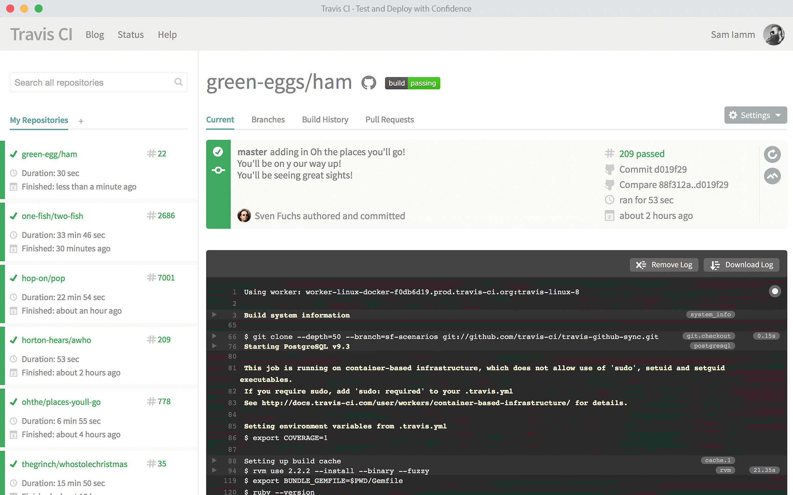
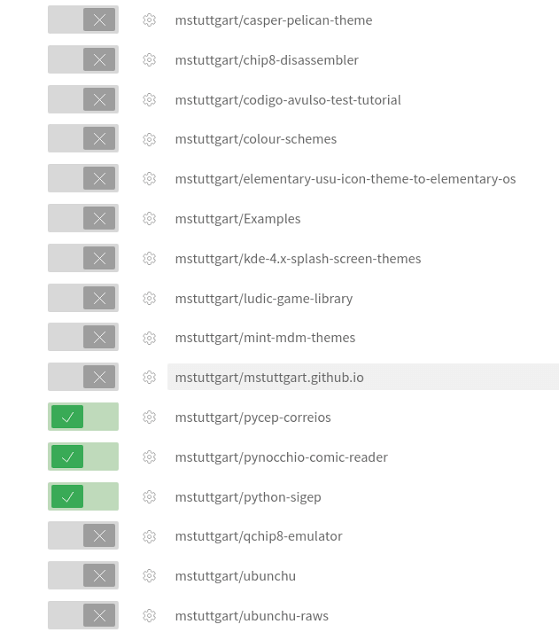
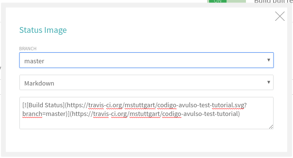
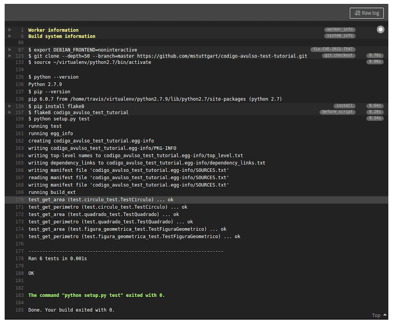

Fala pessoal, tudo bem?
Na primeira parte deste tutorial, aprendemos como criar testes para nosso projeto. Nesta segunda parte, vamos configurar o serviço Travis CI para que o mesmo execute os testes do nosso projeto diretamente no github. Isso é especialmente útil quando possuímos várias pessoas trabalhando em um mesmo projeto, pois o Travis CI executa os testes após cada push ou pull request. Dessa forma garantimos que um determinado commit não irá "quebrar" nossa aplicação.
Antes de inicarmos nosso trabalho de configuração do Travis CI, vamos aprender um pouco mais sobre esse serviço.
Sobre o Travis CI
Travis CI é uma ferramenta online que permite executar o deploy de sua aplicação, rodando de maneira automática os testes do seu projeto hospedado no Github. Através dele é possível manter um histórico dos testes para cada commit do seu projeto, executar testes em paralelo, além do suporte a diversas linguagens de programação. Você pode, por exemplo, verificar se seu projeto funciona corretamente tanto com Python 2.7, quanto com o Python 3.
Após a execução do teste, recebemos um email nos informando se o teste foi bem sucedido ou se houve alguma falha. O serviço é totalmente gratuito para projetos opensource.

Criando uma conta
Para utilizarmos o Travis CI em nosso projeto, precisamos primeiro realizar nosso cadastro no serviço. Para isso acesse https://travis-ci.org/.
Logo no topo direito da página, temos o botão abaixo, para nos inscrevermos usando nossa conta no Github.
Ao pressionar o botão, você será direcionado para a página a seguir:
Realize o login com seu usuário/senha do Github. Assim que realizar o login, na canto superior direito da tela, clique no seu nome de usuário e, em seguida, em "Accounts". Com isso, uma tela com todos os repositórios que você tem permissão de escrita (repositórios pessoais, de organização, forks e etc) será exibida.

Agora vamos ativar o serviço para o repositório que criei na primeira parte do tutorial: codigo-avulso-test-tutorial. Basta clicar no botão "X" ao lado esquerdo do nome do seu repositório. Ele ficará assim:
Bom, a partir de agora, seu repositório está pronto para o usar o Travis CI, porém antes precisamos configurar os parâmetros de teste do nosso projeto.
Configurando o Travis CI em nosso repositório
No diretório raiz do nosso projeto, vamos criar um arquivo chamado .travis.yml.
touch .travis.yml
Observe que o nome do arquivo obrigatoriamente deve inciar com ponto. Após criarmos o arquivo, teremos a seguinte estrutura de diretórios:
.
├── codigo_avulso_test_tutorial
│ ├── circulo.py
│ ├── circulo.pyc
│ ├── figura_geometrica.py
│ ├── figura_geometrica.pyc
│ ├── __init__.py
│ ├── __init__.pyc
│ ├── quadrado.py
│ └── quadrado.pyc
├── codigo_avulso_test_tutorial.egg-info
│ ├── dependency_links.txt
│ ├── PKG-INFO
│ ├── SOURCES.txt
│ └── top_level.txt
├── LICENSE
├── README.md
├── setup.py
├── test
│ ├── circulo_test.py
│ ├── circulo_test.pyc
│ ├── figura_geometrica_test.py
│ ├── figura_geometrica_test.pyc
│ ├── __init__.py
│ ├── __init__.pyc
│ ├── quadrado_test.py
│ └── quadrado_test.pyc
└── .travis.yml
Esse é nosso arquivo de configuração. Nele vamos adicionar qual linguagen nosso projeto utiliza, de quais módulos e pacotes ele depende, entre outras inúmeros ajustes, dependendo do seu projeto. Aqui, vou mostrar as configurações básicas que utilizo, para que o tutorial não fique muito extenso. Então, abra o arquivo .travis.yml em seu editor preferido e adicione o seguinte código.
language: python
python:
- "2.7"
sudo: required
script:
- python setup.py test
Agora vamos explicar cada tag do arquivo:
language: podemos definir qual linguagem nosso projeto utiliza. Se este parâmetro não for incluso, oTravis CIirá considerar a linguagemrubycomo default.python: aqui definimos que os testes serão executados usando o Python 2.7 e se desejarmos, também podemos adicionar outras versões do Python.sudo: usado para executar oTravis CIcomo permissão de usuárioroot. Necessário caso você deseje instalar alguma dependência usando o comandoapt-get install nomepacote.script: nessatag, finalmente vamos executar nosso script de teste.
Dica: neste link você pode colar o código do seu arquivo .travis.yml para verificar se o mesmo está correto.
Adicionado uma badge para o repositório
O próximo passo é é adicionar uma badge para o nosso repositório. Isso não é obrigatório, mas ajuda você, sua equipe e outras pessoas que se interessarem pelo seu repositório, a visualizar o status da execução dos testes e verificar se seu código está funcionando corretamente.

Na tela onde você ativou o Travis CI para seu reposiorio, clique no símbolo da engrenagem.
Na nova tela, podemos realizar algumas configurações, como por exemplo se o Travis CI será executado para push e para pull requests e também podemos pegar a badge. Ao clicarmos no botão logo ao lado do nome do repositório, uma janela será exibida.

Selecione a branch a ser observada pelo Travis CI, escolha a opção Markdown e copie o código que aparecerá na caixa de texto para o arquivo README.md do seu repositório. O meu README.md ficou assim:
# Codigo Avulso Test Tutorial
[](https://travis-ci.org/mstuttgart/codigo-avulso-test-tutorial)
Tutorial de teste unitário em Python para o blog [Código Avulso](http://codigoavulso.com.br/).
Com esses passos, quando algum push ou pull request for enviado ao repositório, o Travis CI executará os testes, garantindo assim o funcionamento estável do nosso código e nos avisando caso alguma modificação venha causar algum erro em nossa aplicação.

Vale lembrar que o tempo para deploy pode variar, dependendo da quantidade de testes do seu projeto, quantidade de dependências a serem instaladas e etc.
Conclusão
Aqui encerramos a segunda parte do nossa série de tutoriais sobre Unittest. Eu decidi separar a série em 4 partes para que cada uma fosse explicada com mais detalhes mas sem deixar o tutorial muito extenso. O Travis IC ainda possui muitas configurações não abordadas aqui, então se você se interessar, pode dar uma olhada na sua documentação oficial aqui. No próximo tutorial veremos como utilizar o Coveralls para gerar relatórios dos nossos testes.
É isso pessoal. Obrigado por ler até aqui!
Até o próximo tutorial!